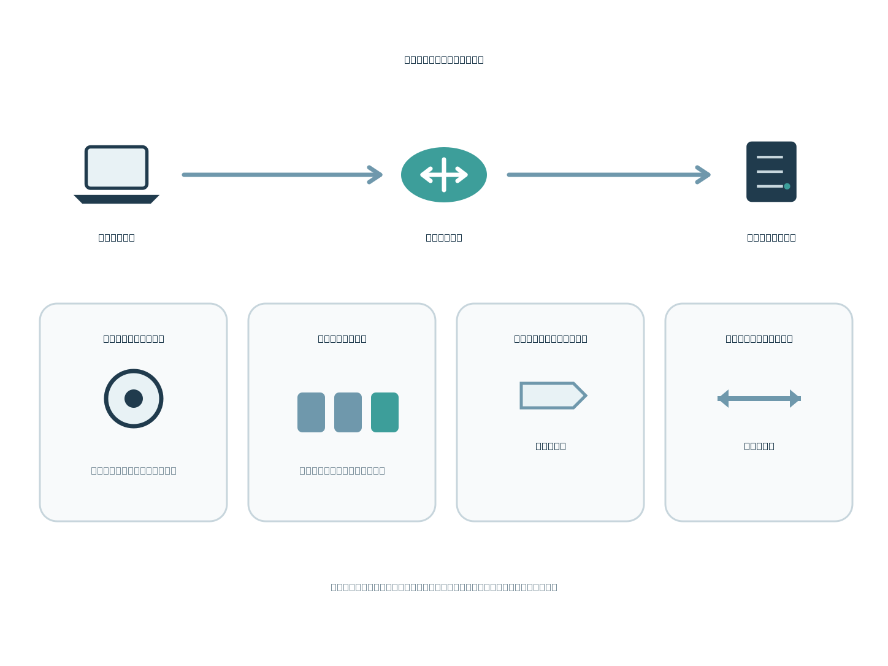

Chapter 3 · Network Performance
Part I — From Signals to Local Networks
Why does bandwidth alone fail to predict application performance?

Download chapter + laboratory for offline study (.zip)lesson + guided practice + knowledge check + laboratory + required files
Why this chapter matters
Section titled “Why this chapter matters”Calling a network fast hides several different questions. Does it deliver the first byte quickly? Can it sustain a large transfer? Does it remain responsive while other traffic is active? Does it behave consistently, or only on average?
A high-capacity link can still have long latency. A low-latency path can still have poor throughput. An idle network can look excellent and then become unusable once queues fill.
This chapter gives us a small set of quantities that let us replace vague impressions with explicit predictions.
Pause and predict. A 1 Gb/s link replaces a 100 Mb/s link between two cities. Which components of delay definitely improve? Which might remain almost unchanged?
1. Start with units, or the model is already wrong
Section titled “1. Start with units, or the model is already wrong”Most performance mistakes begin before the networking begins: bits are mixed with bytes, milliseconds with seconds, or decimal network rates with binary storage units.
Keep the basic conversions visible:
1 byte = 8 bits
1 ms = 0.001 s
1 μs = 0.000001 s
1 Mbit/s = 1,000,000 bit/s
1 Gbit/s = 1,000,000,000 bit/sA useful habit is to normalize everything to bits, seconds, and bits per second before substituting into a formula.
2. Four mechanisms create most path delay
Section titled “2. Four mechanisms create most path delay”For one packet at one hop, a useful decomposition is:
processing + queueing + serialization + propagationThese terms have different causes. Treating them separately lets us ask which engineering change can actually help.
Processing delay
Section titled “Processing delay”A host or router must inspect enough information to decide what to do next. That can include parsing headers, forwarding lookups, policy checks, software execution, copying/moving data, scheduling, and interacting with hardware.
On a simple hardware-forwarded path this may be small. In software-heavy, virtualized, encrypted, or overloaded systems it can matter substantially.
Queueing delay
Section titled “Queueing delay”Packets may already be waiting for the same output resource.
If 12,500 bytes are ahead of us on a 1 Mb/s output:
12,500 × 8 / 1,000,000 = 0.1 s = 100 msQueueing is different from the other terms because it depends strongly on current traffic state. Two consecutive packets can experience very different queueing delays.
Serialization delay
Section titled “Serialization delay”A finite-rate transmitter needs time to place all bits of a packet onto a link:
D_serialization = L_bits / R_bpsFor a 1500-byte packet:
at 1 Mb/s: 12,000 / 1,000,000 = 12 ms
at 1 Gb/s: 12,000 / 1,000,000,000 = 12 μsIncreasing the bit rate directly reduces this term.
Propagation delay
Section titled “Propagation delay”After a bit enters the medium, it still must travel through it:
D_prop = distance / propagation_speedFor 2,000 km at roughly 200,000 km/s:
2,000 / 200,000 = 0.010 s = 10 ms one wayA faster interface does not make electromagnetic propagation exceed the physical speed of the medium.
Key distinction: serialization answers how long does it take to put the bits onto the link? Propagation answers how long does a bit already on the link take to travel?
3. End-to-end delay is a path property
Section titled “3. End-to-end delay is a path property”Across several hops, a simple first model is:
D_total = Σ(D_processing + D_queue + D_serialization + D_prop)The model is useful because every term has an interpretation, but it is not a universal stopwatch formula for arbitrary workloads. Multiple packets can be pipelined across different links, and application dependencies may add waits that are not represented by one packet’s forwarding delay.
A systems engineer should therefore ask two questions:
- What event begins and ends the measurement?
- Which components can occur in parallel?
4. RTT is feedback time, not simply twice a distance
Section titled “4. RTT is feedback time, not simply twice a distance”Round-trip time measures how long it takes for an action to produce relevant feedback.
RTT can include:
- forward-path propagation and queues,
- receiver processing,
- reverse-path propagation and queues,
- protocol behavior at both ends.
The reverse path does not have to be identical to the forward path. Therefore:
RTT ≠ guaranteed 2 × one-way delayPhysical distance still imposes a lower bound, but observed RTT contains more than geography.
Pause and predict.
pingrises from 15 ms to 180 ms while a large upload runs, then falls back to 15 ms when the upload stops. Did the endpoints suddenly move farther apart?
The likely explanation is persistent queueing somewhere on the shared path.
5. Throughput asks how much useful work completes per unit time
Section titled “5. Throughput asks how much useful work completes per unit time”Throughput is a rate over an interval. If a path has link capacities:
R1, R2, ..., Rnthen an idealized steady-state transfer cannot exceed:
min(R1, R2, ..., Rn)The slowest relevant resource is the bottleneck.
But application goodput can be lower than raw network throughput because some transmitted bits are headers, retransmissions, control traffic, encryption overhead, or data the application does not count as useful payload.
CPU limits, receive-window limits, storage speed, congestion control, Wi-Fi contention, and server behavior can also prevent an application from reaching the nominal link rate.
6. Bandwidth-delay product tells us how much data the path can keep in flight
Section titled “6. Bandwidth-delay product tells us how much data the path can keep in flight”Capacity and feedback delay interact. The bandwidth-delay product is:
BDP_bits = R_bps × RTT_secondsFor 100 Mb/s and 40 ms RTT:
100,000,000 × 0.040 = 4,000,000 bits
= 500,000 bytesInterpretation: approximately 500 KB must be in flight to keep a 100 Mb/s path fully occupied over a 40 ms feedback loop.
If the sender is allowed to keep only 64 KiB outstanding, it cannot sustain 100 Mb/s in this simplified model, even though every physical link may support that rate.
This is why transport windows and congestion control become performance mechanisms rather than merely protocol details.
7. Startup cost and steady-state cost matter at different scales
Section titled “7. Startup cost and steady-state cost matter at different scales”Consider a 1 MB object over a 100 Mb/s bottleneck with 100 ms RTT.
Payload serialization is:
1,000,000 × 8 / 100,000,000 = 0.08 sSuppose setup and request dependencies consume three RTTs:
3 × 0.1 = 0.3 sA crude total is:
0.38 sFor this short transfer, startup dominates. Doubling bandwidth would not cut completion time in half.
Now imagine transferring 10 GB. The fixed startup cost becomes relatively unimportant and sustained throughput dominates.
Engineering lesson: optimize the term that dominates the workload you actually care about, not the largest number printed on the interface specification.
8. Statistical multiplexing creates both efficiency and queues
Section titled “8. Statistical multiplexing creates both efficiency and queues”Dedicated capacity for every user’s peak demand would waste resources whenever users are idle. Packet networks instead share capacity statistically.
This is efficient because bursts from different users often do not overlap. When they do overlap, the shared output can temporarily receive packets faster than it can transmit them.
If arrival rate remains above service rate long enough:
arrival > service
↓
queue grows
↓
latency rises
↓
buffer can overflow
↓
loss / retransmission / congestion responseThis connects performance directly to congestion control in M09.
9. Worked example — identify the dominant term before optimizing
Section titled “9. Worked example — identify the dominant term before optimizing”Path characteristics:
- bottleneck rate: 10 Mb/s,
- RTT: 20 ms,
- object size: 10 MB,
- startup dependency: 2 RTTs.
Bulk transmission term:
10,000,000 × 8 / 10,000,000 = 8 sStartup term:
2 × 0.020 = 0.040 sThe simple prediction is about 8.04 s. Transmission rate dominates.
Now replace the bottleneck with 1 Gb/s:
80,000,000 / 1,000,000,000 = 0.08 s
startup = 0.04 sNow startup is one third of the modeled total. The same application has moved into a different optimization regime.
The important step was not arithmetic. It was deciding which mechanism controls the observed time.
10. Measurement is an experiment, not a number generator
Section titled “10. Measurement is an experiment, not a number generator”A useful measurement begins with a question.
ping -c 20 targetAsk:
- Is ICMP representative of the application path?
- Are min, median, and maximum very different?
- Does latency change under load?
- Is loss present?
Throughput
Section titled “Throughput”For controlled experiments, use an iperf3 server/client pair.
Ask:
- TCP or UDP?
- single stream or several?
- test duration?
- CPU saturation?
- Wi-Fi contention?
- shared bottleneck elsewhere?
Latency under load
Section titled “Latency under load”One of the most revealing experiments is simple:
- measure idle RTT,
- start a sustained bulk transfer,
- measure RTT again,
- stop the transfer,
- compare.
A large increase in RTT under load is evidence of queue buildup somewhere along the path.
11. Common reasoning failures
Section titled “11. Common reasoning failures”“More bandwidth always means lower latency”
Section titled ““More bandwidth always means lower latency””It reduces serialization on the upgraded resource. It does not automatically reduce propagation, remote processing, protocol startup, or queueing elsewhere.
“One speed test tells me the network speed”
Section titled ““One speed test tells me the network speed””A speed test samples one path, workload, server, time, protocol behavior, and traffic condition.
“Average latency is enough”
Section titled ““Average latency is enough””Interactive and distributed systems often care about variance and tails because one slow dependency can delay an entire operation.
“The access link is the only bottleneck”
Section titled ““The access link is the only bottleneck””The application, CPU, radio medium, remote server, transport window, or another path segment may dominate.
“A 1 Gb/s path transfers a 1 Gb object in exactly one second”
Section titled ““A 1 Gb/s path transfers a 1 Gb object in exactly one second””That ignores protocol overhead, startup, congestion behavior, application limits, and the distinction between gigabits and gigabytes.
Chapter summary
Section titled “Chapter summary”Keep these performance distinctions separate:
- Processing is work done by hosts/devices.
- Queueing depends on competing traffic and current state.
- Serialization depends on packet size and link bit rate.
- Propagation depends mainly on distance and medium.
- RTT is feedback time across both directions plus processing/queues.
- Throughput is sustained delivery rate and is constrained by bottlenecks.
- BDP links capacity to feedback delay and tells us how much data must be in flight.
- Short transfers and bulk transfers optimize differently.
Before continuing, take any performance claim such as “the Wi-Fi is slow” and rewrite it as a measurable hypothesis.
Systems connections
Section titled “Systems connections”Socket buffers, scheduling, queue disciplines, timers, and process wakeups affect observed latency and throughput.
[ARCH]
Section titled “[ARCH]”NIC rates, DMA, memory bandwidth, CPU processing, offloads, and interrupt behavior can become bottlenecks.
[DIST]
Section titled “[DIST]”RPC latency, fan-out, retries, quorum timing, and tail behavior depend on the same path quantities introduced here.
Encryption and security handshakes add processing and sometimes extra dependency/RTT costs.
[PERF]
Section titled “[PERF]”This chapter supplies the quantitative vocabulary used throughout the rest of the course.
Self-check
Section titled “Self-check”Without looking back:
- Distinguish serialization delay from propagation delay.
- Explain why RTT can increase under load without a path becoming geographically longer.
- Calculate the BDP of a 200 Mb/s path with 50 ms RTT.
- Explain why a short request may benefit more from reducing RTT than doubling bandwidth.
- Give two reasons application goodput can be below the bottleneck link rate.
- Design a simple experiment to detect queueing delay under load.
Then complete the M02 performance laboratory and compare your predictions with measured or deterministic evidence.
Guided practice
Section titled “Guided practice”Time: 10–12 minutes
Materials: calculator, paper, or a text editor; no Internet access required
Prediction
Section titled “Prediction”A 1500-byte packet crosses a 100 Mb/s link and then travels 1000 km through fiber. Before calculating, predict which is larger: serialization delay or propagation delay. Also predict whether doubling the link rate changes propagation delay.
Worked example
Section titled “Worked example”For a 1500-byte packet:
packet size = 1500 × 8 = 12,000 bits
serialization = 12,000 / 100,000,000 = 0.00012 s = 0.12 msUsing a teaching approximation of 2 × 10^8 m/s for propagation in fiber:
distance = 1000 km = 1,000,000 m
propagation = 1,000,000 / 200,000,000 = 0.005 s = 5 msHere propagation dominates serialization. Increasing the link rate reduces serialization but does not make the signal travel through the medium faster.
Guided micro-experiment
Section titled “Guided micro-experiment”Use the same 1500-byte packet and calculate these three cases:
| Case | Link rate | Distance | Packets already queued |
|---|---|---|---|
| A | 100 Mb/s | 1000 km | 0 |
| B | 1 Gb/s | 1000 km | 0 |
| C | 100 Mb/s | 1000 km | 3 |
For case C, approximate queueing delay as three packet serialization times on the 100 Mb/s link. Then rank the cases by one-way delay.
Next calculate a bandwidth-delay product for a path with 100 Mb/s capacity and 20 ms RTT:
BDP = rate × RTTExpress the answer in both bits and bytes. Ask yourself what happens to achievable throughput if the sender can keep only 32 KiB in flight on that path.
Evidence to keep
Section titled “Evidence to keep”Keep the four quantities you computed: serialization, propagation, queueing for case C, and BDP. Under them, write one sentence for each quantity stating which physical or system change could alter it. This is the model you will compare with measured evidence in the laboratory.
Knowledge check
Section titled “Knowledge check”Answer before executing the lab.
- Calculate serialization delay for a 1500-byte packet at 10 Mbit/s.
- A fiber path is made twice as long while link bit rate stays constant. Which delay component changes directly?
- A link has 25,000 bytes waiting ahead of you at 10 Mbit/s. Estimate the queueing delay before your packet can begin serialization.
- Compute the bandwidth-delay product in bytes for 1 Gbit/s and 80 ms RTT.
- Why is
min(link rates)an upper bound for a simple steady-state path but not a guarantee of application throughput? - Give one workload where RTT dominates and another where bulk rate dominates.
- Why can two consecutive pings have different RTTs even though geographic distance has not changed?
- Explain why a 1 Gbit/s link can still produce hundreds of milliseconds of latency when a large queue forms.
- What experimental information must accompany an
iperf3throughput number for another student to reproduce/interpret it?
After answering, run the public numerical tests and compare your units with the expected results.
Required laboratory
Section titled “Required laboratory”Complete the guided practice and knowledge check before starting this lab.
Download chapter + laboratory for offline study.
Extract the ZIP, read lesson.md and lab.md, then use assignment/ for the hands-on files.
The tests and standalone runner are included. Tests for unfinished TODOs are expected to fail until you implement them.
Network performance is easiest to misunderstand when units, path assumptions, and startup costs are mixed together. This lab separates a deterministic calculation model from real measurements.
Predict
Section titled “Predict”Before running code, answer in REPORT.md:
- How long does a 1500-byte packet take to serialize at 1 Mbit/s? At 1 Gbit/s?
- A 100 Mbit/s path has 40 ms RTT. How many bytes are required to fill one RTT?
- If a path contains 1 Gbit/s, 100 Mbit/s, and 250 Mbit/s links, which link limits steady-state throughput?
- Which quantities can
pingreveal directly, and which can it not?
Implement the TODOs in src/performance.py:
- serialization delay,
- propagation delay,
- queue delay,
- bandwidth-delay product,
- bottleneck rate,
- a deliberately simple transfer-time model.
Keep units explicit. The tests are designed to expose byte/bit and milliseconds/seconds mistakes.
Every case is public:
make list-tests
make test
make test-case CASE=bandwidth_delayAdd your own cases under tests/student/.
Measure
Section titled “Measure”Where the tools are available, collect a small experiment:
ping -c 10 <reachable-host>
iperf3 -c <controlled-iperf-server>Prefer a controlled/local peer for throughput measurements. Do not treat an arbitrary public Internet path as a deterministic grader.
If iperf3 is unavailable, use the supplied calculation work and record that the optional measurement could not be performed.
Compare model and evidence
Section titled “Compare model and evidence”Use at least two predictions from your functions and compare them with observed measurements. Explain why the model and measurement differ. Possible causes include protocol overhead, competing traffic, queueing, startup behavior, host scheduling, and the fact that ping RTT is not one-way propagation delay.
Explain
Section titled “Explain”Complete REPORT.md with reproducible commands and numerical reasoning. Screenshots are not required.
GitHub Actions is optional and, if enabled in an exported repository, only repeats the same transparent local tests.